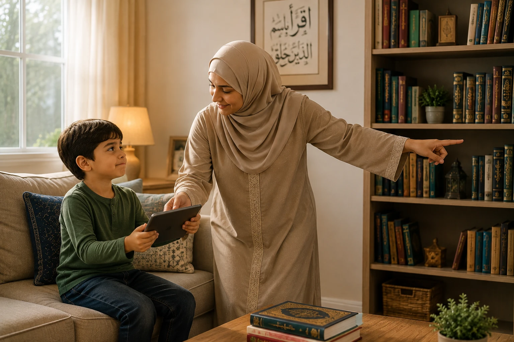

"Just 5 more minutes, Mom!" "But Dad, everyone else has a tablet!" If these phrases echo in your home daily, you are not alone. In the digital age, managing screen time is arguably the biggest parenting challenge Muslim families face. We want our children to be tech-savvy, but we also fear the exposure to inappropriate content, the loss of childhood innocence, and the distraction from Salah and Quran. This comprehensive guide provides 5 gentle, practical, and Islamically grounded steps to set healthy screen time rules without turning your home into a battlefield.
📖 In This Complete Guide, You'll Learn:
- The Islamic perspective on time, distraction (Ghaflah), and digital consumption
- 5 step-by-step strategies to reduce screen time gently and effectively
- How to create "Tech-Free Zones and Times" centered around Salah
- How to curate Halal content and teach digital Adab (etiquette)
- Joyful, screen-free alternatives that kids will actually love
- How to handle tantrums and pushback with Islamic patience (Sabr)
Key Takeaways
- Focus on connection before correction; understand why they are drawn to screens.
- Model the behavior you want to see; put your own phone down during family time.
- Anchor your rules around Salah; screens never interfere with prayer times.
- Quality matters as much as quantity; curate Halal, educational content.
- Replace screen time with real-world joy; boredom is the enemy of limits.

In This Article
- The Islamic Perspective on Screens and Time
- Step 1: Audit Your Own Habits (The Mirror Effect)
- Step 2: Establish Tech-Free Zones and Times
- Step 3: Curate Halal Content (Quality over Quantity)
- Step 4: Teach Digital Adab and Safety
- Step 5: Provide Joyful Halal Alternatives
- Handling Tantrums and Pushback
- Frequently Asked Questions
- Final Thoughts
The Islamic Perspective on Screens and Time
Before we talk about rules and timers, we must understand the spiritual weight of time in Islam. Allah swears by time in Surah Al-Asr, declaring that humanity is in loss unless they use their time for faith, good deeds, and truth. Screens, by their very design, are "time sinks." They can easily pull us into Laghw (vain, useless talk or activity) and Ghaflah (heedlessness of Allah).
The Prophet (PBUH) said: "There are two blessings which many people lose: (They are) Health and Free Time for doing good."
— Sahih Al-Bukhari 6412Our goal isn't to ban technology — it's a tool that can be used for good (learning Quran, connecting with family). Our goal is to ensure technology serves our Deen and family, not the other way around. We want to raise children who control their devices, not children who are controlled by them.
Step 1: Audit Your Own Habits (The Mirror Effect)
Children are brilliant mimics. If they see you scrolling through social media during meals, checking your phone while they are talking to you, or watching videos late at night, they will naturally crave the same dopamine hit. The first step to fixing their screen time is fixing ours.
Action Steps for Parents:
- Check your own Screen Time: Look at your phone's weekly report. Be honest about your usage.
- Put the phone away: When your child enters the room, put your phone face down. Give them your full attention for the first 5 minutes.
- Narrate your actions: Say out loud, "I am putting my phone in the basket now so I can focus on cooking dinner with you."
Create a "Family Phone Basket" near the entrance of your home. When everyone comes home (or when guests arrive), phones go in the basket. Make it a fun family ritual, not a punishment.
Step 2: Establish Tech-Free Zones and Times
Relying on willpower alone doesn't work for kids (or adults!). You need physical and temporal boundaries. The most effective way to do this is by anchoring your rules around the pillars of Islam.
The "Salah First" Rule:
All screens must be turned off 10-15 minutes before the Adhan. This allows the child to make Wudu calmly, prepare their heart for prayer, and understand that nothing is more important than their connection with Allah.
Other Non-Negotiable Tech-Free Times:
- During Meals: The dining table is for conversation, gratitude, and family bonding. No phones, no tablets.
- One Hour Before Bed: Blue light disrupts sleep. Use this time for reading Islamic stories, making dua, or chatting.
- In the Car (Short Trips): Instead of defaulting to a tablet, play "I Spy," listen to Islamic nasheeds, or talk about your day.
Step 3: Curate Halal Content (Quality over Quantity)
Not all screen time is created equal. Watching an educational video about the life of Prophet Yusuf (AS) is vastly different from mindlessly watching short, overstimulating clips. When they do use screens, ensure the content aligns with your values.
How to Curate:
- Use Parental Controls: Apps like Google Family Link or Apple Screen Time allow you to approve apps and set time limits.
- Stick to Trusted Sources: Bookmark specific Islamic YouTube channels (like FreeQuranEducation, Omar & Hana, or Muslim Kids TV) so they don't fall into the algorithmic rabbit hole.
- Co-View When Possible: Watch with them. Ask questions: "What do you think he should do next?" "How do you think Allah feels about that action?" This turns passive consumption into active learning.
Step 4: Teach Digital Adab and Safety
As children grow, they will need to use the internet for school and socializing. We must teach them the Islamic etiquette (Adab) of the digital world.
- The Golden Rule of Posting: "If you wouldn't say it to their face, don't type it." Cyberbullying is a major sin (Gheebah and bullying).
- Privacy is Part of Haya: Teach them never to share personal information, photos, or location with strangers online.
- The "Open Door" Policy: Devices should only be used in common areas (living room, kitchen), never behind closed bedroom doors. This protects them from inappropriate content and predators.
- Reporting to Parents: Assure them: "If you see something scary, confusing, or bad, come tell me immediately. I will not be angry at you; I will be proud you told me."
Step 5: Provide Joyful Halal Alternatives
You cannot simply remove a screen and say "go play." The digital world is engineered to be addictive. You must replace it with something equally engaging in the real world.
Screen-Free Activity Ideas:
- Islamic Building Projects: Build a model of the Ka'bah or a mosque using blocks or cardboard.
- Cooking Together: Let them help make dates, smoothies, or simple meals. It builds life skills and connection.
- Nature Scavenger Hunts: "Find a leaf that looks like a star, a smooth rock, and something green." This builds Tafakkur (reflection on Allah's creation).
- Family Board Game Nights: Make it a weekly tradition with snacks and laughter.
When your child complains "I'm bored!" after you take the tablet, don't rush to entertain them. Say, "Alhamdulillah! Boredom is when your brain gets creative. I can't wait to see what you invent." Boredom is the birthplace of imagination.
Handling Tantrums and Pushback
When you first implement these rules, expect resistance. Your child's brain is going through dopamine withdrawal. Here is how to handle it with Sabr:
Do not yell, snatch the device aggressively, or say "I told you so!" Do not give in to the tantrum just to get some peace and quiet. This teaches them that crying works.
1. Validate: "I know it's hard to stop watching. You really love that show."
2. Hold the Boundary: "But our time is up now. The rule is no screens before Maghrib."
3. Offer Connection: "Do you want to help me chop vegetables, or should we read a book together?"
4. Stay Calm: If they cry, let them cry. Sit near them, offer a hug, but don't hand back the tablet. Your calm presence is their anchor.
Frequently Asked Questions
Start with One Small Change Today
You don't have to overhaul your entire digital lifestyle overnight. Start with one thing: implement the "No phones at the dinner table" rule tonight. Watch how the conversation flows. May Allah help us raise children who are masters of technology, not its slaves.
What is your biggest screen time struggle? Share below so we can support each other!
Final Thoughts
Setting screen time rules is not about being a strict, "mean" parent. It is about being a protective, loving guide. You are guarding their hearts, their eyes, and their time — all of which they will be accountable for on the Day of Judgment. There will be days when you slip up and hand them the phone just to get some peace. Forgive yourself, make tawbah, and try again tomorrow. The goal is progress, not perfection. May Allah protect our children from the harms of this digital age and make them a source of light in their communities. Ameen.